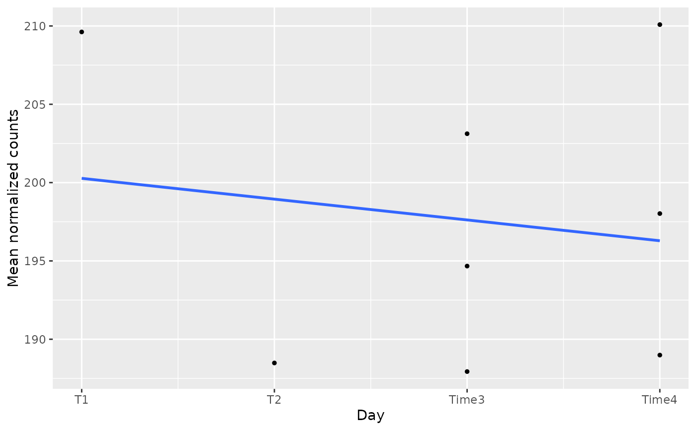
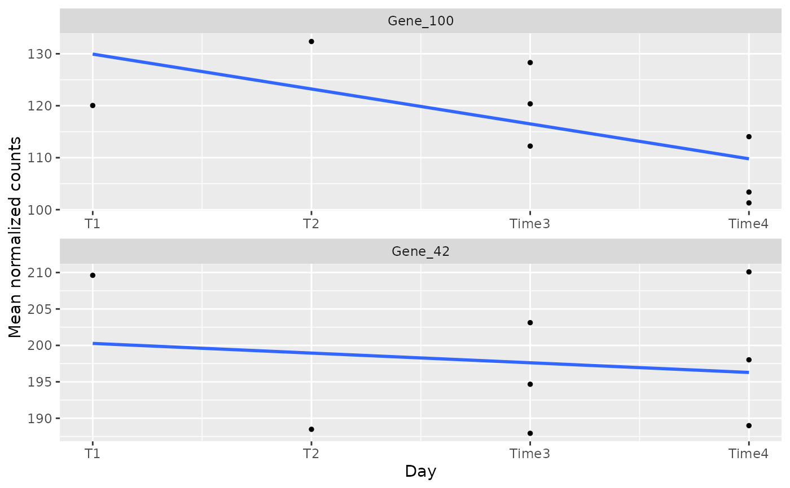
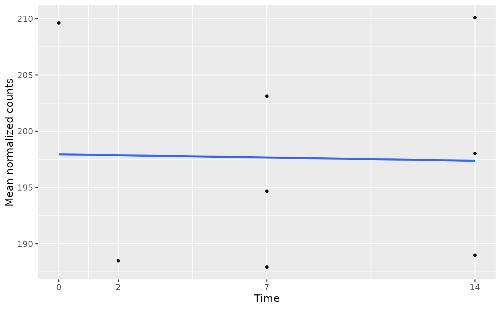

Plots, for the given genes, the mean normalized count of their
barcodes in each sample (taken from the data table) against the time
point of the sample, with a mean trajectory or regression line. It shows
whether a hit decreases (or increases) over time in the selected samples. The slope
of an ungrouped regression line is computed by
compute_slope and
used by filter_by_slope.
Usage
plot_trend(
screenR_Object,
genes,
group_var,
alpha = 0.5,
se = FALSE,
point_size = 1,
line_size = 1,
nrow = NULL,
ncol = NULL,
scales = "free",
time_column = "Day",
time = NULL,
color_by = NULL,
trend = NULL,
reference_groups = NULL,
palette = NULL,
connect_reference = FALSE,
highlight_difference = FALSE
)Arguments
- screenR_Object
The ScreenR object obtained using
create_screenr_object.- genes
The names of the genes to plot.
- group_var
The values of the Treatment column of the data table (see
get_sample_table) of the samples to plot, for example the early time points and the treated samples.- alpha
The opacity of the confidence band, between 0 and 1. Default 0.5.
- se
Whether to draw the confidence band of the regression line. Default FALSE.
- point_size
The size of the points. Default 1.
- line_size
The width of the regression line. Default 1.
- nrow
The number of rows of panels, when several genes are plotted.
- ncol
The number of columns of panels, when several genes are plotted. By default (NULL) ggplot2 chooses nrow and ncol.
- scales
The scales of the panels: "free" (default), "fixed", "free_x" or "free_y".
- time_column
The column of the data table with the time point of each sample: "Day" (default) or, for example, "Treatment" when the time points are described there.
- time
An optional named numeric vector with the time of each time point (the names are the values of time_column), for example c(T0 = 0, T3 = 3, T18 = 18). By default the time points are equally spaced, in the order of the samples.
- color_by
An optional categorical colData variable, for example "Treatment", to overlay a separate trend for each condition. NULL preserves the original single trend per gene. Color and shape both identify conditions; object palettes are used unless palette is given.
- trend
NULL (default), "mean", or "lm". NULL selects a line joining time-point means when color_by is supplied, and the original linear regression otherwise. Mean lines connect condition means across biological samples; they do not connect individual cultures.
- reference_groups
Optional Treatment values to show as neutral reference points, excluded from trend summaries and regressions. They must also be selected in group_var. Shared baseline observations are drawn once, not duplicated into both conditions.
- palette
Optional colors for the levels of color_by, overriding the stored palette.
- connect_reference
With mean trajectories and color_by, connect the shared reference sequence to each condition using its latest reference before that condition's first observation (default FALSE). Reference observations are still displayed once; these connecting segments are descriptive and do not add independent samples or enter regressions.
- highlight_difference
Shade the gap between two condition means at their shared time points (default FALSE, requires mean trajectories). This band shows the observed separation, not a confidence interval.
Details
Replicates of the same time point are drawn at the same time. By default the time points are numbered 1, 2, ... in the order of the samples (equally spaced); give time to place them at their real times.
Each small point is one biological sample, summarized across its barcodes. Larger points on mean trajectories summarize those samples at each time point. The se argument is supported only for trend = "lm"; its band is the ordinary regression confidence band, not an interval for the edgeR/limma gene-level treatment effect. With color_by, each condition is fitted separately. Actual times are recommended when known. No theme is applied; choose appearance in user code with theme_set().
Examples
object <- get0("object", envir = asNamespace("ScreenR"))
plot_trend(object, genes = "Gene_42", group_var = c("T1", "T2", "TRT"))

plot_trend(object,
genes = c("Gene_42", "Gene_100"),
group_var = c("T1", "T2", "TRT"),
nrow = 2
)

# With the real times of the time points
plot_trend(object,
genes = "Gene_42", group_var = c("T1", "T2", "TRT"),
time = c(T1 = 0, T2 = 2, Time3 = 7, Time4 = 14)
)
